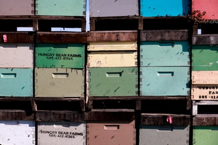
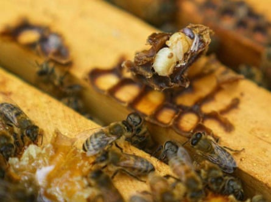
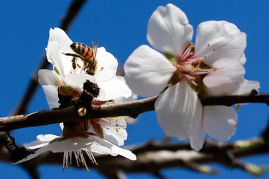

B ret Adee is one of the largest beekeepers in the US, with 2 billion bees across 55,000 hives. The business has been in his family since the 1930s, and sends truckloads of bees across the country from South Dakota, pollinating crops such as almonds, onions, watermelons and cucumbers.
Last December, his bees were wintering in California when the weather turned cold. Bees grouped on top of hives trying to keep warm. “Every time I went out to the beehive there were less and less,” says Adee. “Then a week later, there’d be more dead ones to pick up … every week there is attrition, just continually going down.”
Adee went on to lose 75% of his bees. “It’s almost depressingly sad,” he says. “If we have a similar situation this year – I sure hope we don’t – then we’re in a death spiral.”
It developed into the largest US honeybee die-off on record, with beekeepers losing on average 60% of their colonies, at a cost of $600m (£440m).
Bees searching for food in dead beehives in California. As well as mites, honeybees suffer from habitat loss, climate change and chemical stress.Photograph: San Francisco Chronicle/Getty
Scientists have been scrambling to discover what happened; now the culprits are emerging. A research paper published by the US Department of Agriculture (USDA), though not yet peer-reviewed, has found nearly all colonies had contracted a bee virus spread by parasitic mites that appear to have developed resistance to the main chemicals used to control them .
Varroa mites – equivalent in size to a dinner plate on a human body – crawl and jump between worker bees. If there are no infections present, they do not typically damage the bee. But if diseases are present, they quickly spread them.
While varroa typically infects honeybees, not wild bees, the diseases that they spread can kill other pollinators – research has shown that the viral outbreaks among honeybees often spill over to wild colonies, with potential knock-on effects on biodiversity.
All beekeepers in the USDA screening used amitraz, a pesticide widely used in the sector to get rid of mites. But the research showed all mites tested were resistant to it: after years of heavy use, amitraz no longer appears to be effective. This discovery underscores “the urgent need for new control strategies for this parasite”, researchers say.
Mite numbers have increased to high levels in recent surveys, according to the researchers, who collected hundreds of samples from dead and living hives from 113 colonies. “When mites become uncontrolled, virulent viruses are more likely to take over,” researchers say.
Since the 1980s, varroa mites globally have developed resistance to at least four leading miticides – pesticides specifically formulated to control mites that are challenging to develop – causing significant problems for beekeepers.
Norman Carreck, a senior technician at the University of Sussex, who was not involved in the research, says: “Sadly, it was inevitable that major honeybee colony losses would again occur in the US at some point.
A varroa mite is visible on a dead bee in a hive. The mites are a leading factor in the recent US bee die-offs but not the only one.Photograph: Julio Cortez/AP
“It was only a matter of time before widespread resistance to amitraz, the only remaining effective synthetic chemical, would develop,” he says.
But the discovery of amitraz-resistant mites in hives does not mean they alone were responsible for all of last year’s record die-offs. A combination of factors is likely to be causing successive colony deaths among US bees, including the changing climate, exposure to pesticides, and less food in the form of pollen and nectar as monocrop farming proliferates. Many US beekeepers now expect to lose 30% of their colony or more every year.
These wider combined factors are also devastating for wild pollinators and native bee species – and honeybees, which are closely monitored by their keepers, may be acting as a canary in the coalmine for pressures affecting insects more generally.
Paul Hetherington , of the charity Buglife, says honeybees are in effect “a farmed animal as opposed to wild bees, but they will be suffering from the same stresses as their wild cousins, in particular loss of good habitat, climate stress, chemical stress, light.
Adee says: “We had mites for 20 years, and we never had over 3% losses.” He believes there is a “combination of things” that makes the bees more stressed and the mites more deadly.
He cites the use of neonicotinoid insecticides in the US, which harm bees’ nervous system, paralysing and ultimately killing them. Some researchers have warned of neonicotinoids causing another “silent spring” , referring to Rachel Carson’s 1962 book on the effects of the insecticide DDT on bird populations.
Dave Goulson, professor of biology at the University of Sussex, says the study provided no evidence that the viral load was higher in weaker colonies. “Almost all bee colonies have these viruses, but they only do significant harm when the colony is stressed.”
A bee pollinates almond trees in California, during the world’s largest pollination event requiring the services of 70% of US honeybees.Photograph: Jessica Christian/Getty
He says high levels of viral infection may be a symptom of ill health, not the cause.
Due to government staffing cuts, the USDA team were unable to analyse pesticides in the hives and asked bee experts at Cornell University to carry out the research , with the results still to be published.
Experts are concerned that successive loss of honeybee colonies could affect food security as the insects pollinate more than 100 commercial crops across North America. Reports of new losses this year came through before the California almond blossom season, which is the largest pollination event in the world, requiring the services of 70% of US honeybees.
Danielle Downey, director of the nonprofit beekeeping research organisation Project Apis m. , which conducted the die-off survey, says: “If you like to eat, you need healthy bees to pollinate crops. Beekeepers try to rebuild each year but they are pushed to the brink as losses and input costs keep increasing.
“If beekeepers fail, there is no backup plan for the pollination services they provide in US food production,” she says.
Meanwhile, beekeepers are being pushed close to ruin. When Adee was growing up, he would get upset about losses of more than 5%. Now a loss of 30% each year is standard. “It’s absolutely insane that that’s an acceptable loss in a livestock industry,” he says.
Like many beekeepers, Adee was unable to restock this year because the losses were so high. “I’m just watching every nickel and dime right now, because I don’t want to get rid of men that have helped me manage these bees for years.”
Find more age of extinction coverage here , and follow the biodiversity reporters Phoebe Weston and Patrick Greenfield in the Guardian app for more nature coverage